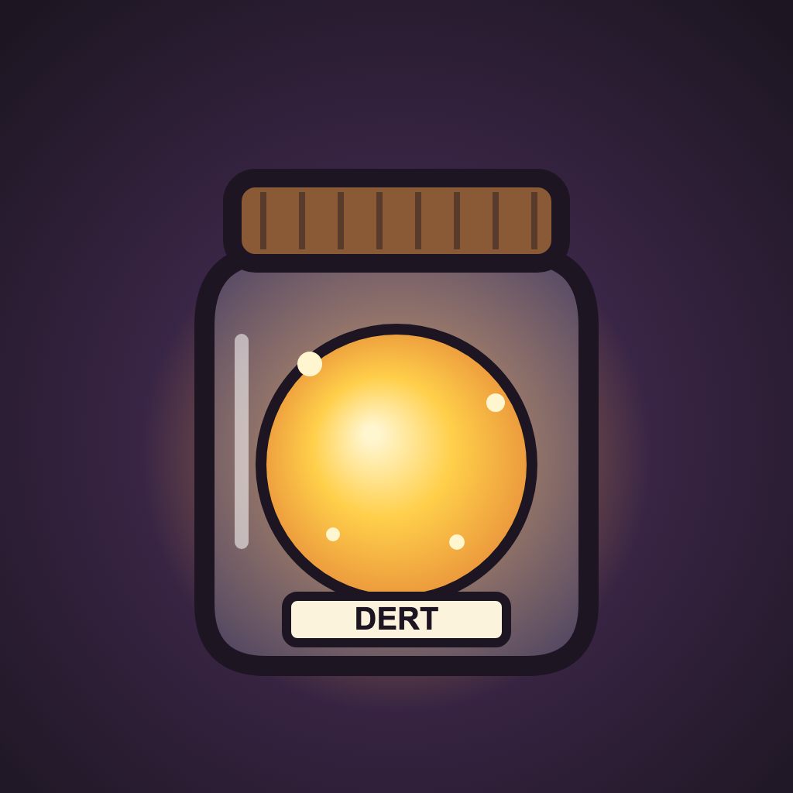

Dert Takas Studio
Dert Takas Studio is a personal tool used by a single independent creator to publish the animated short series Dert Takas Dükkânı ("The Trouble Exchange Shop").
The creator makes each episode on their own computer. Once an episode is finished and approved, the tool uploads the video to the creator's own TikTok account as a draft using the TikTok Content Posting API (video.upload). The video appears in the creator's TikTok inbox, and the creator adds the caption and publishes it manually in the TikTok app.
The tool has no public users, does not access anyone else's account and does not publish anything automatically.
Contact: mta.hybrid3445@gmail.com